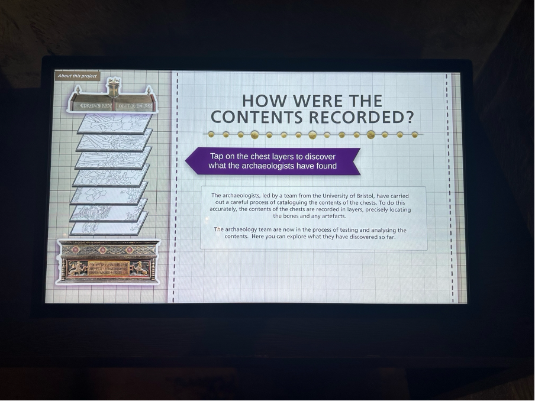
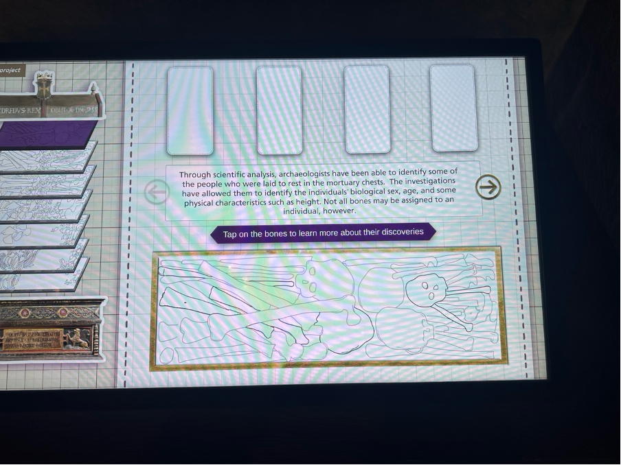
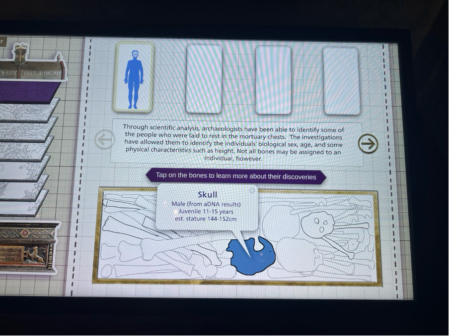

During my continued exploration of other interactive installations at Winchester Cathedral, I encountered a fascinating touchscreen exhibition that uses digital means to guide visitors through the composition of a set of historical human bones. The installation primarily features a human skeleton diagram, allowing visitors to click on different parts to view their names, with colours indicating which individual each bone belongs to. Four colour-coded slots above the screen clearly explain that the bones in the display case do not come from a single person, but are a mix of remains from four individuals.

This visual overlay is highly inspiring. It not only conveys the complexity of archaeological analysis but also makes people realize that what we’re facing isn’t “a complete person,” but fragmented clues of intertwined lives like a puzzle that needs to be identified piece by piece.

However, from a user experience (UX) perspective, this interactive system still has obvious room for improvement. Although the clickable bones are marked with slightly bold black lines, this marking is very inconspicuous. For example, when my friend used it, they tried to click on a certain bone multiple times, but the interface didn’t respond. We initially thought the system was faulty, but later realized that only the slightly thicker lines were interactive. This kind of prompting is too obscure and easily causes misunderstanding and frustration.
Reflection
This experience has made me realize the importance of clarity and affordance in interactive design. In an educational and information-dense context, visual guidance must be explicit enough. Using line thickness alone to distinguish clickable areas is clearly insufficient. More effective improvements could include:
- Highlighting elements with a glow when the mouse cursor or finger hovers over them;
- Adding a short tutorial animation or operation instructions;
- Using color contrast or icon prompts instead of relying solely on line variations.
This experience also reminds me again: all design should prioritize the experience of first-time users. As designers, we often overlook newcomers’ unfamiliarity with interfaces because we know how the interaction works. Design should be self-explanatory, not requiring users to trial and error their way through.
Idea about my project
Combining with my ongoing Winchester Cathedral AR project, this experience has further strengthened my design direction:
- Clearly mark interactive areas to avoid user misclicks;
- Add click feedback, such as subtle animations or color flashes;
- From the perspective of users’ first contact, prioritize usability and guidance design upfront rather than treating them as later patches.